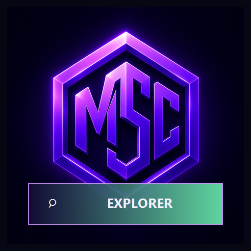
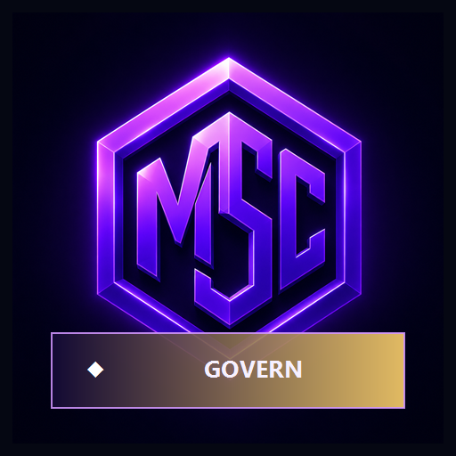
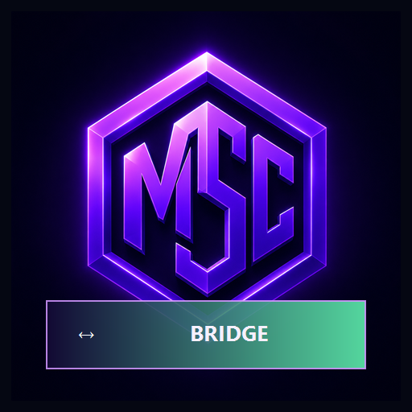
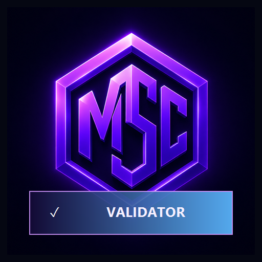

MSC Chain knowledge base
MSC Chain Blog
Research, explainers, and operating guides for people who want to understand MSC Chain through verifiable public evidence. The blog organizes the most important learning paths for wallet users, node operators, validators, developers, governance participants, and analysts.
Featured MSC Chain articles
Start with these evergreen guides when evaluating the network, explaining MSC to another user, or preparing an integration. Each article links back to live explorer, wallet, RPC, validator, and governance surfaces where the current state can be checked.

MSC vs EthereumA technical comparison for developers, researchers, users, and teams evaluating blockchain platforms. MSC vs SolanaConsensus, execution, performance, validator requirements, tooling, and ecosystem maturity.
MSC RoadmapNetwork reliability, validators, wallets, developer tooling, governance, interoperability, and growth.Wallet, security, and user education
Wallet content is written for practical safety. It separates public addresses from private recovery material, explains transaction review, and encourages users to verify every meaningful result through the explorer instead of trusting screenshots.

Bridge GuideRoutes, limits, confirmations, relayers, fees, supported assets, and transfer verification. Transaction LifecycleSigning, submission, mempool admission, block inclusion, execution, receipts, and finality. Transaction FeesFee inputs, estimation, payment, policy, wallet displays, receipts, and explorer verification.Validators, nodes, and protocol operations
Infrastructure posts focus on repeatable operations. A useful MSC node or validator process must be synchronized, monitored, backed up, and separated from unsafe public access. These guides help operators prove that their setup matches the chain rather than only proving that a service process is running.

Run an MSC ValidatorPlan, install, secure, monitor, and maintain validator infrastructure and signing identity. Run an MSC Full NodeOperate a node for verification, wallet access, RPC service, explorer support, or resilience. Node MonitoringHealth, peers, finality, consensus mode, storage, memory, latency, and public RPC service. Validator SecurityKeys, sentries, restricted RPC, backups, monitoring, access control, and incident response. Consensus ExplainedProposers, votes, quorum, block commitment, validator sets, and finality evidence. Snapshot RecoverySnapshots, manifests, chunks, state commitments, backups, and recovery validation.Developers, APIs, governance, and ecosystem
Developer and governance posts help builders make durable decisions. They emphasize chain identity checks, typed API responses, retry behavior, proposal evidence, activation heights, and public links that another reviewer can inspect later.
Blog FAQ
What does the MSC Chain blog cover?
The blog covers MSC Chain fundamentals, wallet safety, validator and node operations, RPC APIs, explorer verification, tokenomics, governance, testnet usage, DApp development, fees, bridges, and protocol concepts such as finality and consensus.
Are blog posts separate from documentation?
The blog is an editorial index. It groups the most important long-form documentation into reading paths, while the canonical articles remain in the documentation section. This keeps search engines and AI systems focused on the most complete source for each topic.
How should readers verify any guidance?
Readers should compare guidance with the current MSC Explorer, wallet transaction records, public node status, governance pages, and canonical documentation. Wallet secrets, validator keys, passwords, and recovery phrases should never be shared in support requests or public reports.